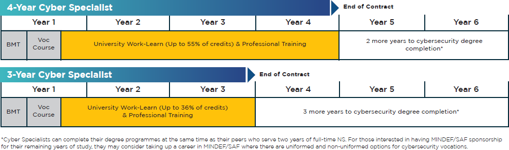

After I graduate I will have to serve NS as I am a Singaporean Male, however I am applying for Cyber NSF(photo of details below) so that I can start my career in IT early and not waste time in NS.
During my time in Cyber NSF, I will be sponsored to study in university as well, as part of my NS training. Thus I will be able to get AUs which can be used when I study full-time in university after NS.
I would like to study a double degree in Computer Science and Physics and a double major for Computer Science and AI/Data Analytics.
If I take up a CSIT scholarship again in univeristy, or another governemnt agency, I will complete my bond and work there for a few years.
However, if I do not I will most probably go to the private secter doing back end development.
Currently there are not that many local big AI or tech companies, however this is very likely to change once I graduate from university, thus depending on the opportunities available then, I may work for a local or gloval company. I would obviously like to work at big companies like Google or Tesla as they are conducting research on the latest technologies and have the money and ability to spport such research and experimentation as compared to smaller companies.
